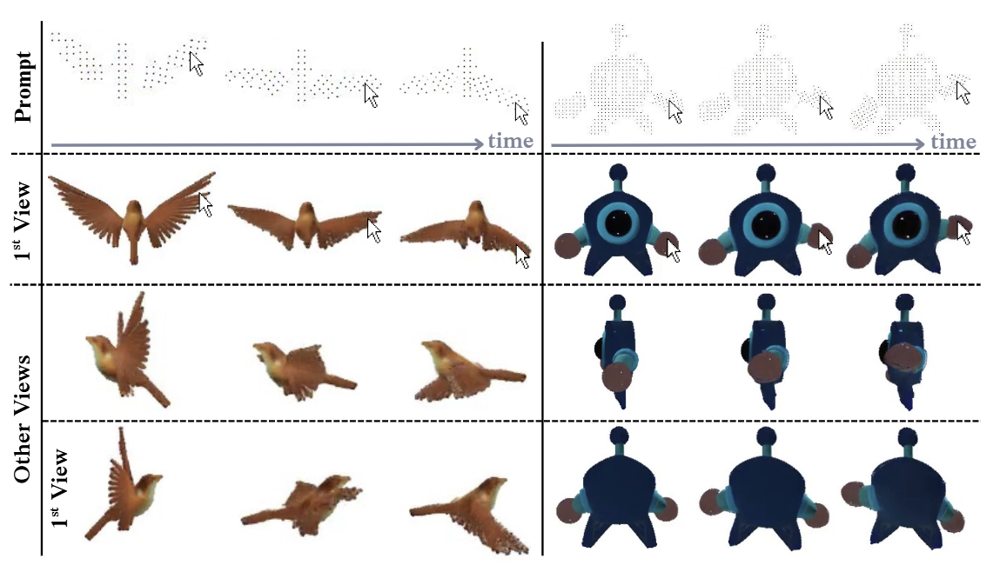
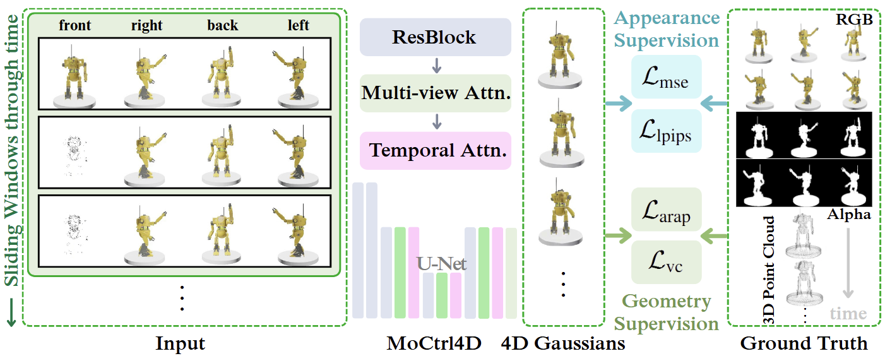

Promptable 4D generation is a crucial task with broad applicability across industries, thus has recently gained tremendous interest in research community. However, existing works remain predominantly limited to image and text conditioning, which neglect the nuances of motion controllability. To address this, we propose to use dynamic motion prompt defined by any number of point trajectories. To translate user intention into this motion representation, we design a user-friendly interface that allows users to intuitively input motion trajectories, bringing images to life through direct interaction. Unlike prior works, in leveraging prior knowledge of a base reconstruction model, our method integrates prompts without added modules, maintaining scalability and data efficiency without overhead, achieving a full forward pass in under a second. Furthermore, instead of relying on existing appearance-focused learning frameworks, which suffers from poor motion fidelity, we design a novel physically inspired \textit{Vector Consistency Loss (VCL)} function for explicit motion learning. Our quantitative and qualitative results show significant improvement in spatiotemporally-precise and expressive control.

MoCtrl4D accepts single image and motion prompt as inputs and generate 4D asset correspondingly. Motion prompt can be accepted by simple UI using intuitive mouse dragging. From the left, the input consists of four views. The main-view image (labeled “front”) is formed by temporally concatenating the static image with the intended trajectory images. The auxiliary-view images are duplications of the initial-frame images across time. The model is a U-Net architecture with interleaved ResNet blocks, multi-view attention, and temporal attention layers for 4D Gaussians prediction. Training uses two supervisory signals: (1) appearance losses computed against ground-truth RGB and alpha renderings from the dataset, and (2) geometric motion losses computed against ground-truth 3D point trajectories.

Move right hand
Drop both hands
Raise both hands
Kneel down, drop arms
Stand, drop arms
Idle
Drop wings, step right
Attack
Idle
Image
UI
Result
L4GM
Tail disappears
MoCtrl4D
Tail doesn't disappear
L4GM
Right arm fades
MoCtrl4D
Right arm doesn't fade
Cane disappears
Cane doesn't disappears
Body color fades
Body color doesn't fade
Body color fades and mixes
Body color remains clear
Left side colors mix
Color mixing is less severe
Part of cane disappears
Cane remains whole
Face colors fade
Face colors remain
Back becomes black
Back remains green
Back becomes black
Back preserves cloth patterns
White parts colors mix
White parts colors remain
Back cloth patterns mix
Back cloth patterns remain
Back becomes darker
Back remains purple
Gaussians break into parts
Gaussians remain
MoCtrl4D
SP4D
LASR
Note that SP4D was trained to accept 4 frames. SP4D results here are concatenation of 2 times inference of 4-frame SP4D to obtain 8 frames.
Gaussians disconnect
Gaussians fly out
Gaussians fly out
Left hand cannot separate correctly
Gaussians fly out
Object cannot separate correctly